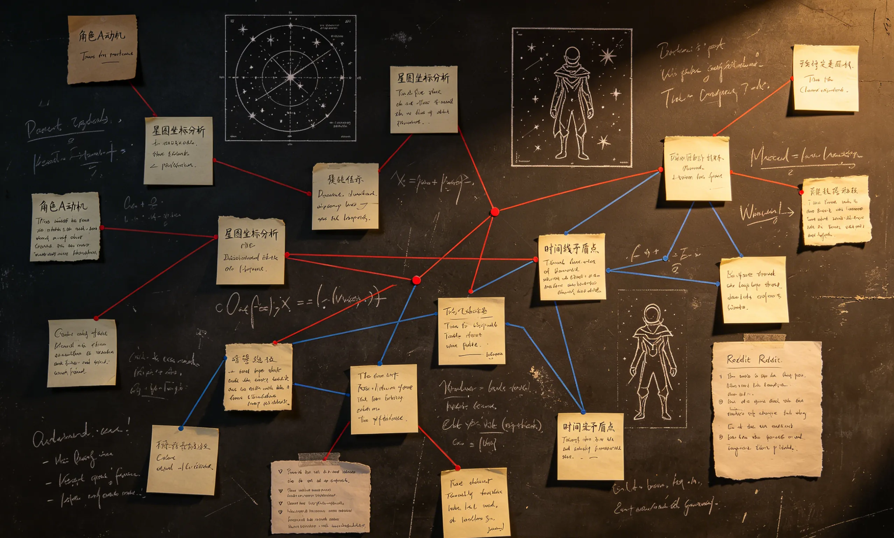

Fan Theory / Speculation: The ideas below are interpretive discussion prompts, not official canon.

Was Stratt Right?
The strongest version of the theory says Stratt is not a villain but an extinction-era instrument. The counterargument is that emergency competence can still create moral injury.
Did Grace Really Change?
One reading says Grace's final choice proves deep transformation. Another says his teaching instincts were always there, and the mission simply forced them into a larger arena.
Could There Be a Sequel?
A sequel could explore Erid, Earth's recovery, or future human-Eridian contact. The risk is that the original ending is powerful because it leaves enough unsaid.
Why Did Rocky Become So Popular?
Rocky combines competence, vulnerability, and alien design. He is emotionally readable without being reduced to a human in costume.
More PHM content: Read the ending explained, explore character profiles, or compare book vs movie.